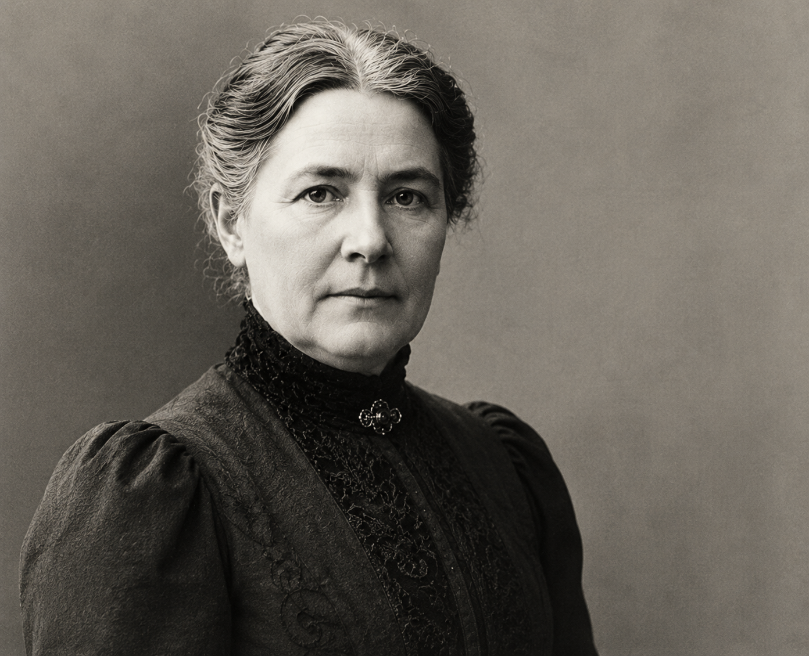

Gimimo data: 1845-06-04
Mirties data: 1921-12-07
Regionas: Šiaulių apskritis
Žanras: Proza
Trumpa biografija
Lietuvių rašytoja, realistinės prozos atstovė.
Kūriniai
- Marti
Nuotraukos


Gimimo data: 1845-06-04
Mirties data: 1921-12-07
Regionas: Šiaulių apskritis
Žanras: Proza
Lietuvių rašytoja, realistinės prozos atstovė.